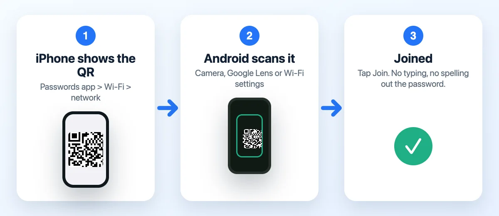
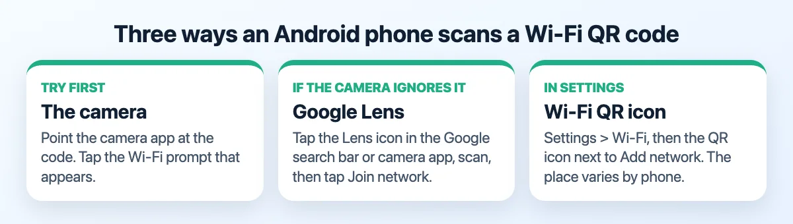
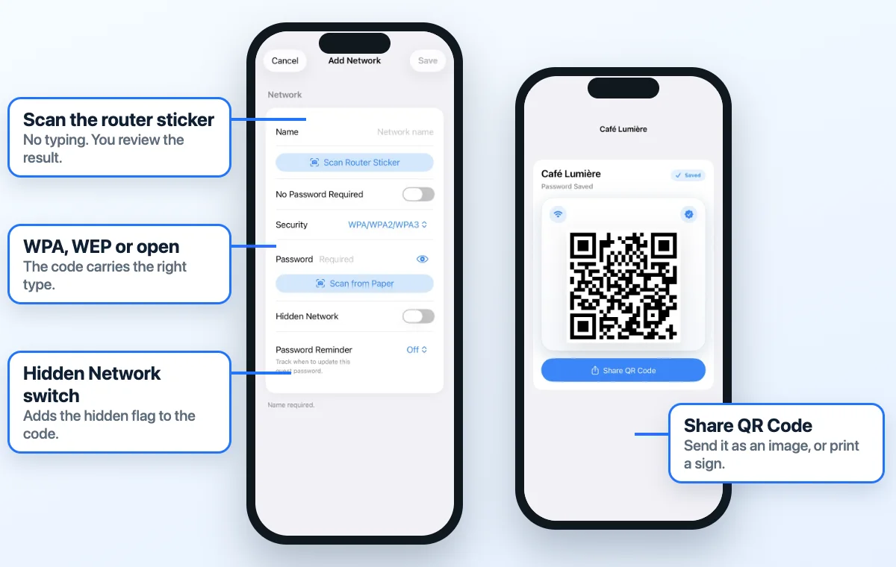
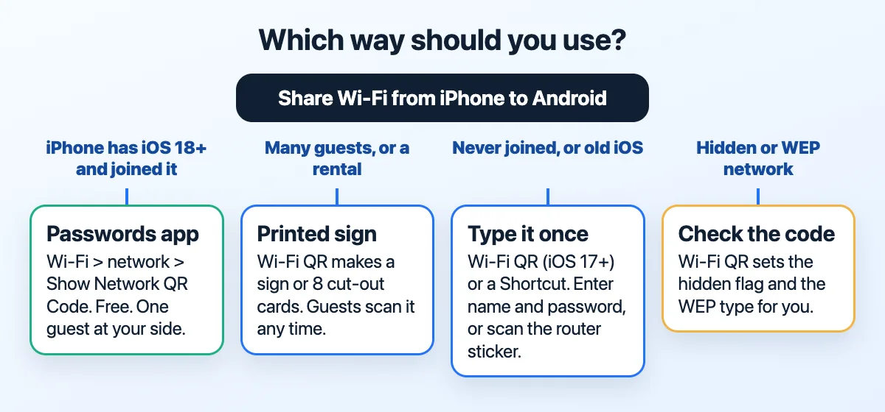

Guide · Wi-Fi QR for iPhone
How to share your Wi-Fi password from iPhone to Android
Apple's tap-to-share works only between Apple devices. For Android, use a QR code. On iOS 18 and later, the free Passwords app makes one in four taps.

Yes, you can share a Wi-Fi password from an iPhone to an Android phone. Open the Passwords app on the iPhone, tap Wi-Fi, tap the network, and tap Show Network QR Code. The Android phone scans the code and joins. This needs iOS 18 or later. The usual iPhone Share Password prompt does not work for Android, because Apple lists it for iPhone, iPad and Mac only.
Your iPhone, your best way
- iOS 18 or later, network already joined: Passwords app, Show Network QR Code. Free and built in.
- Older iOS, desktop, or a network the iPhone never joined: type the name and password once in Wi-Fi QR code maker for iPhone (iOS 17 or later) or use our free browser Wi-Fi QR generator.
- Many guests, or a rental: print a guest Wi-Fi QR sign or cut-out cards (jump to printing steps).
How to share Wi-Fi password from iPhone to Android with a QR code
Apple's iPhone guide says to open the Passwords app, tap Wi-Fi, and open a network. Then tap Show Network QR Code. MacRumors and Neowin both say that this feature came with iOS 18 and that Android phones can scan the code.
- Open the Passwords app and unlock it.
- Tap Wi-Fi. The list shows the network you use now and the networks you saved before.
- Tap the network that you want to share.
- Tap Show Network QR Code.
- Let the Android phone scan the code. The next section shows how.
This is the best way when one person stands next to you. It has three limits. It shows only networks that this iPhone saved. The code is on your screen, so you must be there. And it makes no sign for a room or a desk. I did not test hidden or WEP networks in this app, and Apple does not say how it handles them.
Without an app, without a QR code, or by Bluetooth
Without an app: yes, on iOS 18 or later. The Passwords app is part of iOS, and the Android camera can scan the code. On an older iOS, you need an app or a Shortcut to make the code.
Without a QR code: the one-tap Share Password prompt needs both devices to be Apple devices, close together, and saved in each other's Contacts. For an Android phone, you can open the network in the Passwords app, tap the password field, tap Copy Password, and send the text in a message. The other person then types it.
By Bluetooth or NFC: I found no built-in way to send a Wi-Fi password from an iPhone to an Android phone with Bluetooth or NFC. Apple's Share Password uses Bluetooth, but only between Apple devices. Google's Nearby Share option is for Android devices. The QR code is the bridge between the two.
To an Android TV: a TV usually has no camera to scan a code. I found no official page for a QR way on a TV, so I leave that out. Use the Wi-Fi screen on the TV, and copy the password from the Passwords app as shown above.
How an Android phone scans a Wi-Fi QR code

According to Android Authority, you can scan with the phone camera, if it supports this, or with Google Lens. Tap Join network when it shows. On many phones, Settings, then Wi-Fi, has a QR icon next to Add network. The place of the icon changes by phone model.
Why does my Android not scan the QR code? Try these steps in order:
- Use Google Lens or the QR icon in the Wi-Fi settings, not only the camera.
- Raise the iPhone brightness, hold both phones still, and remove glare from the screen.
- Check that the password in the code is still right. If someone changed it, make a new code.
- For a school or work network with its own sign-in, a normal Wi-Fi code does not work.
Can Android share Wi-Fi with an iPhone?
Yes. Google's Pixel help says: open Settings, tap Network & internet, then Internet. Tap Settings next to the network, tap Share, and verify your identity. The phone then shows a QR code. On the iPhone, open the Camera app and point it at the code. Apple explains QR scanning with the iPhone camera. Other Android brands name the menus in other ways.
When Wi-Fi QR is the better tool
The Passwords app is free and already on your phone. Use it first. I built Wi-Fi QR for the jobs it does not do. Apple does not let apps read saved Wi-Fi passwords, so in Wi-Fi QR you type the password once, or scan it from the router sticker.

- Networks you never joined. Type the name and password, or tap Scan Router Sticker and review the result.
- Hidden and WEP networks. The form has a security type and a Hidden Network switch, and the code carries both.
- Saved networks. They stay on your device. Search them, and share the code any time.
- Share the image. Tap Share QR Code to send the code as a picture, for example in a check-in message.
- Older iPhones. Wi-Fi QR needs iOS 17 or later. The Passwords app needs iOS 18.
Many guests: print the code
If ten guests ask for the password, a printed code saves you ten trips. Wi-Fi QR prints a guest sign, or a page of 8 cut-out cards. Read how to print a Wi-Fi QR code sign, the Airbnb WiFi sign guide, and the three ways to share Wi-Fi with a QR code on iPhone.
Safety: a Wi-Fi QR code holds the network name and password as plain text. Anyone who scans it can join. For guests, use a guest network, and change the password if a code goes to the wrong person.
Passwords app vs Shortcuts vs Wi-Fi QR

| Way | Needs | Which networks | Hidden and WEP | Print a sign | Cost |
|---|---|---|---|---|---|
| Passwords app | iOS 18 or later | Saved networks. It reads the password for you. | Apple does not say | No. You show the screen. | Free, built in |
| Shortcuts | You build the shortcut | Any network. You type the name and password. | The example offers WEP and WPA. You add a hidden flag in the text yourself. | You save the image and print it yourself | Free, built in |
| Wi-Fi QR | iOS 17 or later | Any network. You type, or scan the router sticker. | Yes, a switch and a type menu | Yes: signs and 8 cut-out cards | Free. Pro is a one-time unlock for more templates. |
Questions
How do I share a Wi-Fi password from iPhone to Android? Use the Passwords app on iOS 18 or later: Wi-Fi, the network, Show Network QR Code. Then scan it with the Android camera.
Can I share Wi-Fi from iPhone to Android via Bluetooth? I found no built-in way. Apple's Share Password works only between Apple devices.
Is there a way to share Wi-Fi from iPhone to Android without a QR code? Copy the password in the Passwords app and send it as text. The other person types it.
Can Android share a Wi-Fi password with an iPhone? Yes. Settings, Network & internet, Internet, the network, Share. The iPhone camera scans the code.
Why does my Android not scan the QR code? Try Google Lens or the QR icon in Wi-Fi settings, then check brightness and the password.
Can I share a Wi-Fi password from my iPhone to an Android TV? A TV usually cannot scan a code. Type the password on the TV.